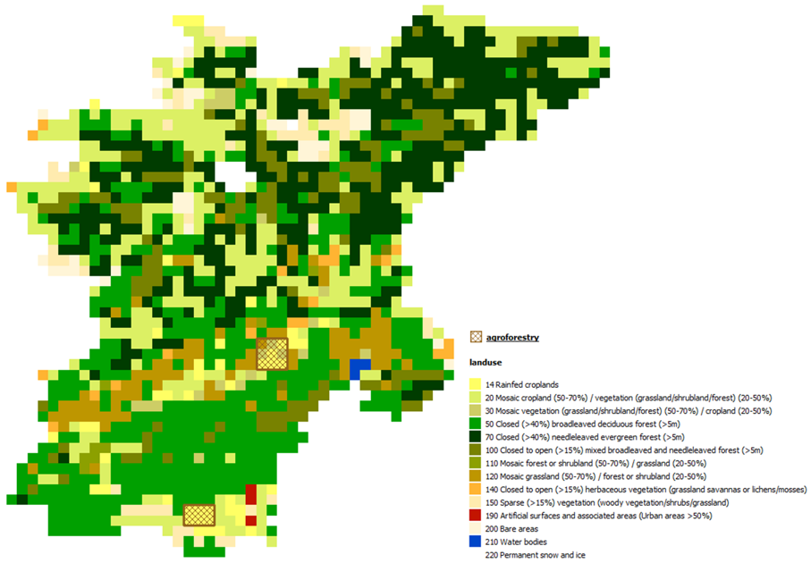

Setup Agroforestry#
Description#
Agroforestry is a practice that integrates trees and shrubs into agricultural landscapes.
The setup_agroforestry method is part of a set of methods to add Nature Based Solutions
(NBS) to a Hydromt Wflow model. This method allows users to integrate agroforestry
areas into the land use configuration of the model. By specifying agroforestry regions,
users can modify land use characteristics to better represent the influence of agroforestry
practices on hydrological processes.
Users can provide agroforestry areas either through a raster file or a vector file. For example, users can use global land cover datasets that include agroforestry classes, convert all agricultural areas of their landuse to agroforestry areas, or use custom shapefiles delineating agroforestry zones.

Agroforestry parameters and lookup table#
Agroforestry is a NBS measure that modify the landuse and hence the landuse related
parameters in Wflow. Users have several options to define the related landuse parameters
for agroforestry. As for other setup_lulcmaps methods, users can provide a lookup table
or use the default lookup table provided with Hydromt Wflow:
agroforestry |
description |
landuse |
vegetation_kext |
land_manning_n |
soil_compacted_fraction |
vegetation_root_depth |
vegetation_leaf_storage |
vegetation_wood_storage |
land_water_fraction |
vegetation_crop_factor |
vegetation_feddes_alpha_h1 |
vegetation_feddes_h1 |
vegetation_feddes_h2 |
vegetation_feddes_h3_high |
vegetation_feddes_h3_low |
vegetation_feddes_h4 |
erosion_usle_c |
|---|---|---|---|---|---|---|---|---|---|---|---|---|---|---|---|---|---|
1 |
Agroforestry |
1 |
0.635 |
0.238 |
0 |
394.9 |
0.095 |
0.02 |
0 |
1.09 |
0 |
0 |
-100 |
-400 |
-1000 |
-16000 |
0.234 |
Or users can provide a complete landuse lookup table and define their own mix of landuse classes and fractions to represent agroforestry areas, for example 90% cropland and 10% shrubs. For example, the values in the default agroforestry lookup table above were derived use the esa_worldcover_mapping_default lookup table with a mix of 75% cropland (class 40), 15% shrubs (class 20) and 10% trees (class 10).
Example usage#
Here are two examples of how to use the setup_agroforestry method in a Hydromt Wflow model:
Using a vector file to define agroforestry areas and a mix of 90% cropland and 10% shrubs of the esa_worldcover_mapping_default lookup table.
Converting all agricultural areas in the catchment above (class 14 in globcover) to agroforestry areas and using the default agroforestry lookup table.
The definition of the method and the arguments is done in a workflow file (YAML format).
The workflow file can then be used to build or update a model from the command line interface.
For example, using the pre-defined artifact_data catalog:
$ hydromt update wflow_sbm "./path/to/model_to_update" -o "./path/to/model_with_agroforestry" -d "artifact_data" -i "./path/to/add_agroforestry.yaml" -v
For our first example, the workflow YAML file (add_agroforestry.yaml) would look like this:
steps:
- setup_agroforestry:
agroforestry_fn: "agroforestry areas" # data catalog entry
output_agroforestry_class: 15 # new landuse class for agroforestry areas
lulc_mapping_fn: "esa_worldcover_mapping_default" # esa_worldcover lookup table
lulc_mix_classes: [40, 20] # cropland, shrubs classes in esa_worldcover
lulc_mix_fractions: [0.9, 0.1] # 90% cropland, 10% shrubs
output_names_suffix: "agroforestry" # suffix for the new staticmap names
For our second example, the workflow YAML file (add_agroforestry.yaml) would look like this:
steps:
- setup_agroforestry:
agroforestry_fn: "globcover" # globcover landuse raster
agroforestry_class: 14 # globcover agricultural class
output_agroforestry_class: 15 # new landuse class for agroforestry areas
agroforestry_mapping_fn: "agroforestry_mapping_default" # default agroforestry lookup table
For python, you need to first instantiate a Wflow model and then call the setup methods directly:
from hydromt_wflow import WflowSbmModel
model = WflowSbmModel(
root="path/to/model_to_update",
mode="r+",
data_libs=["artifact_data"]
)
For our first example, the python code would look like this:
model.setup_agroforestry(
agroforestry_fn="agroforestry areas", # data catalog entry
output_agroforestry_class=15, # new landuse class for agroforestry areas
lulc_mapping_fn="esa_worldcover_mapping_default", # esa_worldcover lookup table
lulc_mix_classes=[40, 20], # cropland, shrubs classes in esa_worldcover
lulc_mix_fractions=[0.9, 0.1], # 90% cropland, 10% shrubs
output_names_suffix="agroforestry" # suffix for the new staticmap names
)
For our second example, the python code would look like this:
model.setup_agroforestry(
agroforestry_fn="globcover", # globcover landuse raster
agroforestry_class=14, # globcover agricultural class
output_agroforestry_class=15, # new landuse class for agroforestry areas
agroforestry_mapping_fn="agroforestry_mapping_default" # default agroforestry lookup table
)